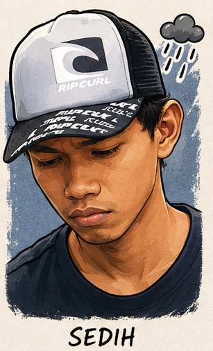

Ini bukan cerita kemenangan. Ini cerita tentang bagaimana satu AI — dengan niat yang mungkin baik — berhasil mengacak-acak tiga file inti di Bunker Opanowski dalam sekali sesi. Dan tentang bagaimana gw, dengan bantuan Claude dan git, berhasil menyelamatkan semuanya.
Tanggal 10 Mei 2026. Gw minta AI Meta bantu optimasi beberapa file di repo ~/Desktop/opanowski/. Hasilnya? Bencana kecil yang makan waktu seharian buat dibenerin.

"Gw literally ga nyangka satu sesi sama AI bisa bikin website gw jadi kayak gini. Niat optimize, hasilnya malah jadi investigasi sehari penuh..."
1. Awal Mula: Misi yang Kelewatan
Awalnya sederhana. Gw minta AI Meta bantu beberapa hal di repo Bunker — termasuk mastiin script latest-posts.js bisa render kartu post terbaru di halaman utama. Karena ada bug kecil yang belum sempet gw benerin.
Masalahnya: AI Meta tidak paham struktur project secara keseluruhan. Dia tau satu file tapi tidak tau file lainnya. Dia nulis ulang, replace, "optimasi" — tanpa tahu bahwa yang dia timpa adalah fondasi utama website.
1. index.html (root) — isinya ketuker total jadi blog/index.html
2. latest-posts.js — isinya masih oke, tapi proses yang dia sarankan merusak konteks
3. index.html di GitHub (live) — ada bug tag duplikat dan teks literal nyasar

"Tiga file sekaligus. Dalam SATU sesi. Dan yang paling nyebelin — semua kelihatan baik-baik aja dari luar sampe gw reload browser..."
2. Investigasi: 4 Temuan Kritis
Setelah gw lapor ke Claude — "3 catatan paling bawah di mainpage ilang semua gegara si META" — investigasi dimulai. Hasilnya? Empat temuan yang makin dalam makin bikin geleng-geleng kepala.
File ~/Desktop/opanowski/index.html yang harusnya berisi halaman portal utama "Bunker Opanowski — Villa Ciracas" — isinya adalah blog/index.html alias halaman Log Harian. Dua file nyaris sama jumlah barisnya (725 vs 726 baris). AI Meta nulis ulang file yang salah ke lokasi yang salah.
File index.html asli memang punya tag <script src="latest-posts.js"> — tapi tidak ada script yang membaca array LATEST_POSTS dan menginjeknya ke div#latest-posts-grid. latest-posts.js di-load, tapi hasilnya tidak pernah muncul di halaman. Bug lama yang selama ini didiamkan.
Di versi live di GitHub, ditemukan:
1. Tag </script> duplikat yang nyasar
2. Teks literal ← TAMBAH INI nempel di dalam tag script
3. Tag </body> duplikat sebelum script render
Hasilnya: browser tidak bisa load latest-posts.js sama sekali.
Ternyata file index.html.bak yang dibuat saat sesi berlangsung — isinya sudah file yang salah (blog/index.html). Backup manual gagal total. Satu-satunya harapan: git history.

"Backup .bak yang gw andalin ternyata isinya file yang sama — yang salah. Perasaan waktu itu... nggak enak banget. Untung masih ada git."
3. Proses Penyelamatan: Git Jadi Pahlawan
Satu-satunya jalan keluar: git history. Untungnya, gw punya kebiasaan commit setiap kali ada perubahan yang sudah terbukti berfungsi. Dan commit bersih terakhir — sebelum Meta masuk — masih ada.
Setelah index.html dipulihkan, masalah kedua: kartu post tetap tidak muncul karena script render memang belum pernah ada. Solusinya? Gw inject 3 kartu post langsung ke HTML — hardcode, tanpa bergantung pada dynamic loading yang rawan masalah timing.

"Waktu liat 3 kartu muncul sempurna di Live Server — rasanya kayak abis lari marathon terus nyampe garis finish. Capek, tapi puas banget!"
4. Push & Selesai: Hasil Akhir
5. Pelajaran: Yang Bisa Diambil dari Insiden Ini
cp file.html file.html.bak sebelum apapun dimulai.
Mulai sekarang: AI lain boleh dikonsultasi, boleh diminta sarankan kode — tapi eksekusi tetap di tangan Om Opan. Yang boleh langsung edit file adalah Claude yang sudah kenal workflow Bunker. Bahkan Claude pun harus verifikasi dulu sebelum push.

"Hari ini berat — tapi Bunker udah kembali normal, SOP udah diperketat, dan gw jadi jauh lebih paham cara kerja project ini. Boleh lanjut."
📌 Penutup
Hari ini melelahkan. Tapi juga jadi salah satu hari paling berharga — karena gw belajar secara langsung, dengan konsekuensi nyata, tentang pentingnya git, pentingnya commit yang rajin, dan pentingnya paham dulu sebelum percaya AI apapun untuk edit file production.
Bunker Opanowski sudah kembali normal. Dan sekarang punya satu layer pertahanan ekstra: SOP yang lebih ketat, dan pemahaman yang lebih dalam tentang cara kerja website statis ini.
AI bisa jadi alat yang luar biasa. Tapi alat tetap butuh tangan yang paham cara pakainya.
Belajar sampai menutup mata. 🏴Pernah kena hal serupa? Cerita di kolom komentar! 🔧